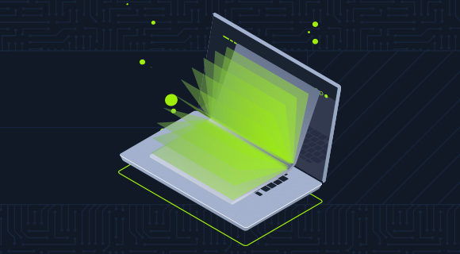
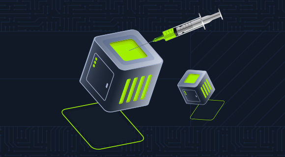

OCT 2025 — PRESENT
Cybersecurity Network Security Engineer Intern
Safaricom PLC
- Endpoint protection platform administration.
- Firewall ruleset reviews.
- Vulnerability assessment lifecycle activities.
- ServiceNow change request (CRQ) controls.
CYBERSECURITY · NETWORK SECURITY · VULNERABILITY MANAGEMENT
I am Wanjohi Teresia Waruiru, a cybersecurity practitioner focused on network security engineering, vulnerability management, and practical security testing.
01 / ABOUT
My work sits across defensive security operations and hands-on technical investigation. My current engineering experience includes endpoint protection platforms, firewall ruleset reviews, vulnerability assessment lifecycles, and change-control processes.
I document lab work as reproducible technical case studies: defining the scope, recording the method, validating observations, and identifying the security lesson and remediation implications.
02 / RESUME
A concise overview of education, engineering experience, and selected credentials.
Safaricom PLC
Call Centre International
Secunets Technologies
Zetech University
Zetech University · Second Class Honours, Upper Division
Certified August 2026
USIU-Africa & Cyber Shujaa · 2026
03 / PROJECTS
Three documented lab projects, each with a focused technical scope and supporting evidence.
Documented web content discovery and parameter-enumeration exercises using FFUF, including directory discovery, extension checks, DNS subdomain enumeration, HTTP virtual-host discovery, and GET/POST parameter testing.

View completion ↗Practical SQL injection exercises covering query logic, UNION-based result analysis, database metadata enumeration, file-read and file-write conditions, and validation of assessment findings.

View completion ↗Lab assessment documenting InfluxDB exploration, container execution context, Docker socket/API misconfiguration, API-version troubleshooting, container-root access, and host-filesystem boundary analysis.
04 / LABS & CHALLENGES
Additional practical work recorded in the portfolio assignment. Add verified write-up links as they are published.
Study topics include identification and authentication failures, application design flaws, and insecure data handling.
Active Directory enumeration and common domain attack paths, including Kerberos-related assessment techniques.
Controlled lab exploration of SMB exploitation concepts and post-exploitation tooling.
05 / WRITING
A space for concise technical explanations, lessons from lab work, and defensive implications.
Modern web vulnerabilities, changes in the OWASP risk categories, and practical SOC monitoring and mitigation considerations.
07 / SCREENSHOT EVIDENCE
Replace each labelled placeholder with a genuine screenshot after the site is deployed. Redact sensitive lab information before publishing.
06 / CONTACT
For professional opportunities, technical collaboration, and discussion around security engineering.